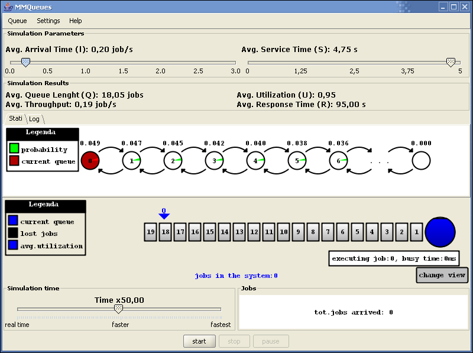

Next: Descrizione della schermata principale.
Up: Manuale Utente
Previous: Requisiti minimi.
MMQueues non ha bisogno di alcuna procedura di installazione.
Il programma è allegato in due formati:
- MMQUEUES.EXE per sistemi operativi Windows. In questo
caso per eseguire l'applicazione basterà fare ``doppio click''
sull'icona dell'applicazione stessa().
- MMQUEUES.JAR per tutti gli altri sistemi operativi.
In questo caso si dovrà digitare al prompt di una shell di comando:
-
-
java -jar MMQueues.jar
a questo punto (indipendentemente dal sistema operativo usato), apparirà
la schermata principale del simulatore.
Figure 1:
Schermata principale.

|
Ernesto
2004-04-15